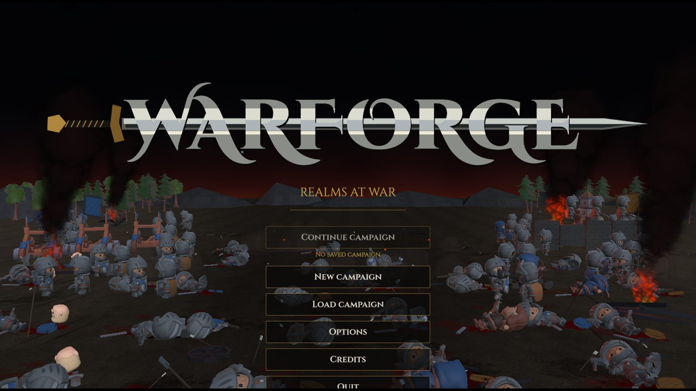
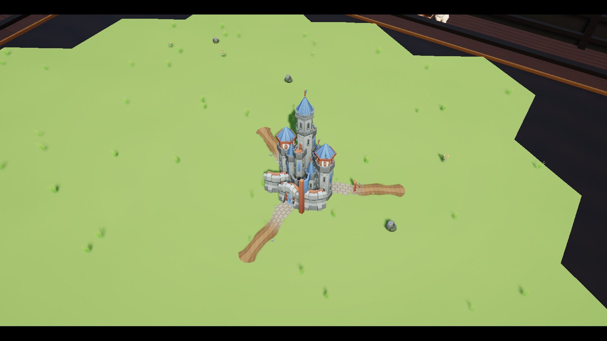
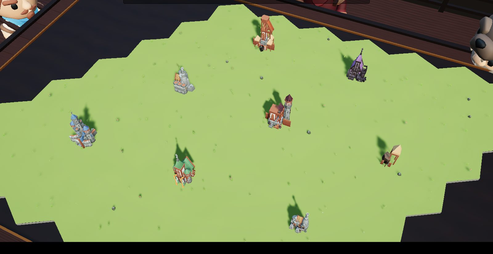
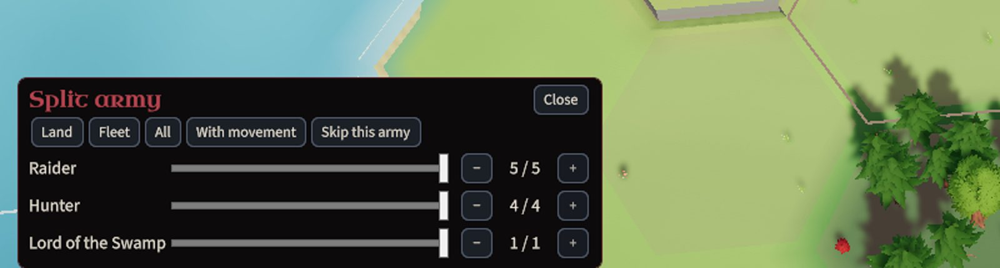

Dev Diary #1 · November 2026
Building the Board
Welcome to the first WARFORGE dev diary. From here on there will be one of these with every update, covering what changed, why, and what's coming next. Before getting into this update, a little context for anyone new.
What WARFORGE is
WARFORGE: Realms at War started as a physical board game. It is a hex-based strategy game for up to six players, each leading one faction: the Vanguard, the Empire, the Ironborne, the Raiders, the HORDE and the Damned. You claim land, build, trade, make and break alliances, and go to war. The digital version is built on the same rules as the tabletop game, so everything you see here started on a table with cards and tiles.
The title screen
The game now opens on the aftermath of a battle. Fallen soldiers, scattered weapons, smoke and fires, with the WARFORGE sword across the top.

Hills, mountains and roads
The terrain got a full pass.
- Mountains now have proper ridges, snow on the peaks and foothills at the base.
- Hills are rounded and have cliff edges.
- Roads follow the edges between tiles and look like worn dirt and stone paths leading up to your castle.

Every faction has its own buildings
Each of the six factions now has its own version of every building: castle, outpost, mine, harbor, fishery and claim marker. 42 pieces in total, each in the faction's colours and style, so you can tell who holds what without hovering over anything.
The HORDE also gets the Breeding Den, a building only they can construct. Other factions can only raze it.
When you capture a building, it changes to show your faction's banner, so a captured outpost deep in enemy land is easy to spot.

Splitting armies
Splitting an army used to take too many clicks. The new panel lets you pull units out by type with sliders, or in one click take all land units, all ships, everything, or only the units that can still move this turn.

Music and an optional gore setting
Music is in and the game is no longer silent. There's also an optional gore setting for battles, for players who want them messier.
How we test every update
A bit of behind the scenes. Before any update is installed, the game plays 72 complete games between computer players, with every faction. Every game has to finish, every move has to be legal, and the game has to be able to replay each one exactly from its save. If any of those fail, the update doesn't go in. This update passed with over 111,000 moves played and no rule errors.
About the art you're seeing
Right now the game uses free 3D asset packs from KayKit, Quaternius and Kenney, credited in the game. During prototyping, some reference images, including early unit cards, faction portraits and some interface icons, were made with AI to work out the look. Those are placeholders only. Every one of them will be replaced by work from real artists before release, and the final art, models and music will all be made by people.
We're looking for artists
We're commissioning artists now and will keep doing so as new factions are added. If you'd like to work on WARFORGE, we're looking for:
- Concept artists (characters, creatures and factions)
- 3D character artists (modelling and sculpting)
- Riggers and animators
- 3D environment and prop artists (buildings, terrain, props)
- UI artists (icons, crests, menus)
- Illustrators for key art and the store page
Send a DM with your portfolio if you're interested.
What's next
The next update is about the computer players and the war room:
- Computer players that lay siege. They'll plan attacks on castles and bring siege engines instead of throwing armies at walls.
- A war room that comes alive. Commanders and advisers stand around the table and move while you play, the board gets birds and small signs of life, and the seasons change as the months go by.
- Smoother zoom. The camera no longer jumps when you zoom after panning.
If you've read this far, thank you. Questions, ideas and feedback are all welcome on Discord.